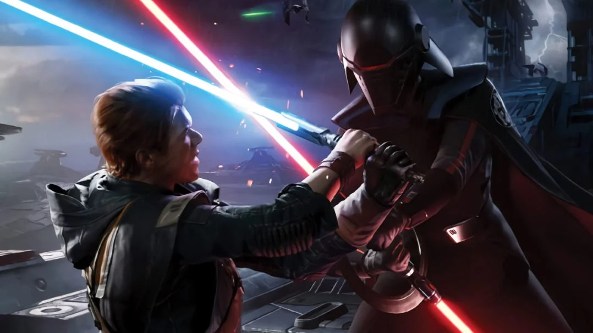
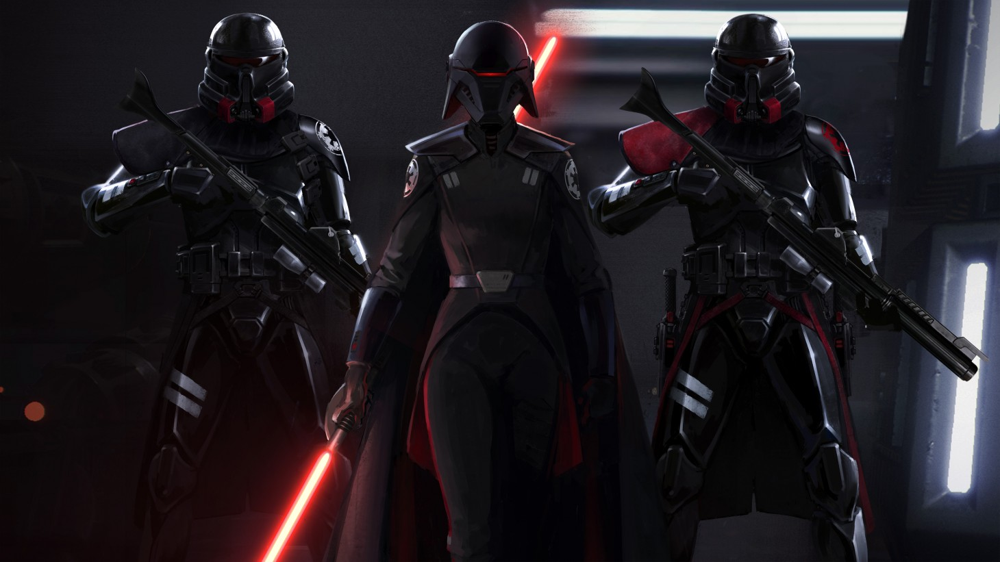
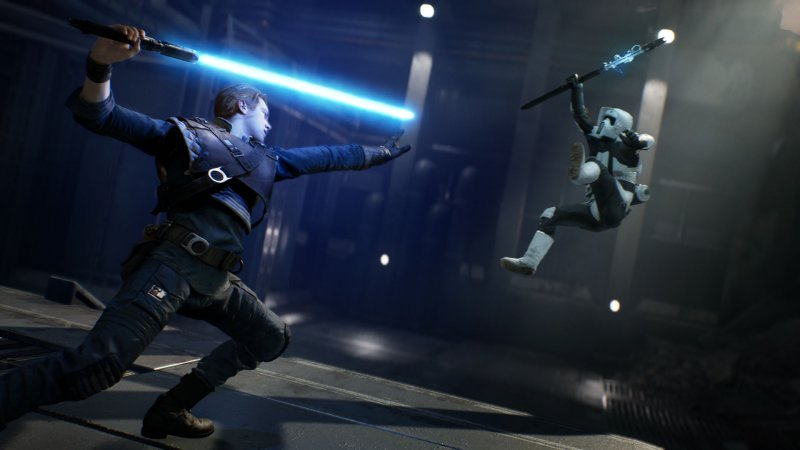
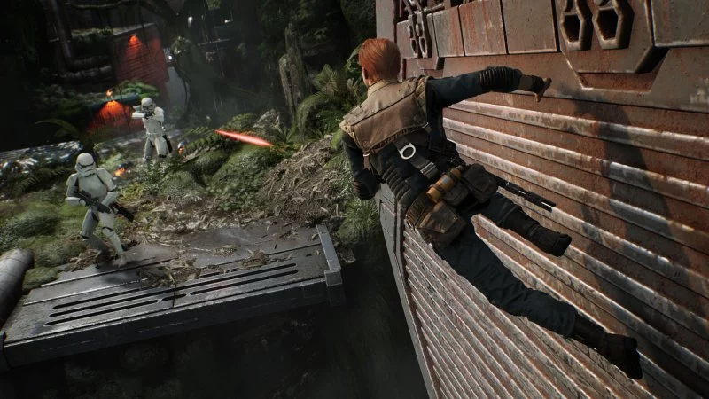
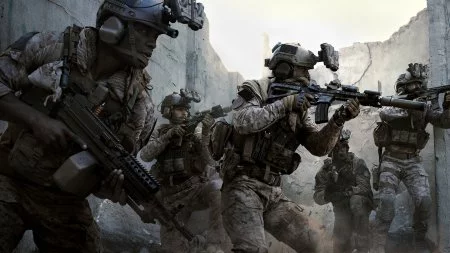
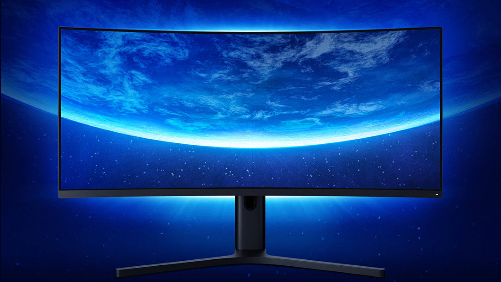

Star Wars Jedi: Fallen Order, la recensione - PS4
La recensione di Star Wars Jedi: Fallen Order. Con vari prodotti altalenanti all'attivo e i frutti della scommessa Motive ancora ignoti, EA affida a Respawn la licenza Star Wars. Riuscirà il team a rendere giustizia al marchio? Scopriamolo insieme
RECENSIONE di Nicolò Giaccone - 16/11/2019
INDICE
Iniziamo la recensione di Star Wars Jedi: Fallen Order raccontando che tanto tempo fa, in una galassia lontana lontana, Star Wars dominava quasi ogni campo dell'intrattenimento, videogiochi compresi. C'erano alti e bassi, certo, e l'enorme universo espanso dedicato a questo titanico marchio ha preso spesso strade difficilmente commentabili in modo positivo... eppure il colosso creato da Lucas era in grado di trasmettere un che di magico a qualunque medium, tanto da dar vita anche nel nostro allegro panorama a classici del calibro di Jedi Knight, TIE Fighter e Knights of the Old Republic. Ben sappiamo che a questi giochi di culto si sono affiancate schifezze invereconde come Masters of Teras Kasi, ma se non altro in quel glorioso decennio qualunque cosa fosse legata a doppio filo a Jedi, Impero e compagnia bella aveva un buon 50% di probabilità di meritare una caduta di mascella; oggi invece il nome Star Wars scatena molti più dubbi e negatività di quanto si sia mai visto - persino durante il periodo "prequel" - e, tutta presa dai progetti televisivi e cinematografici, Disney sembra aver in larga parte ignorato il mondo dei videogiochi, dando il nulla osta a titoli per lo più deludenti (seppur non necessariamente malvagi).
Lo sfruttamento della licenza di Electronic Arts, in particolare, non ha dato i frutti sperati ai fan di vecchia data, nonostante il gigante statunitense abbia speso un quantitativo mostruoso di soldi e risorse per la creazione di prodotti potenzialmente validi. Dopo la stramba parentesi Motive e gli sparatutto di DICE, dunque, EA ha deciso di scommettere sul suo più promettente cavallo di razza: quei Respawn che hanno ringalluzzito i conti della casa con Apex Legends, e già dimostrato un talento eccezionale coi due Titanfall. A questi veterani provenienti in larga parte dalla Infinity Ward originale è stato dunque affidato Star Wars Jedi: Fallen Order: sulla carta il grande action che il publisher ha tentato per anni di portare a termine inciampando qua e là. Sarà bastato il loro talento a riportare l'equilibrio nella Forza? Cerchiamo di scoprirlo in questa recensione.
L'inganno del Lato Oscuro
In verità, non vogliamo iniziare l'articolo all'insegna dell'analisi, bensì con un importante avvertimento: per carità divina, non basatevi sulle prime ore della campagna per valutare Star Wars Jedi: Fallen Order. Il lavoro di Respawn infatti è davvero ingannevole durante le battute iniziali, così derivative da sembrare una sorta di demo creata appositamente per i trailer e incollata a forza al gioco reale. E non è un'esagerazione, anche perché questo videogame prende sì a piene mani da altri titoli - è una sorta di minestrone di meccaniche e strutture, creato con una filosofia di fondo non dissimile da quella dei Darksiders - ma la sua fase introduttiva dà seriamente l'impressione di essere studiata a tavolino per una presentazione davanti a investitori completamente inconsapevoli di cosa sia un buon videogioco, al punto da farlo sembrare una copia poco ispirata degli Uncharted nonostante il rispettabilissimo impatto visivo delle ambientazioni. Nulla è più lontano dalla realtà: Fallen Order ci mette una manciata di ore a carburare, e superato quel muro introduttivo mostra tutto il talento del team che lo ha creato, trasformandosi in un action ricchissimo di trovate geniali e solido in ogni aspetto. D'altro canto a Respawn vi sono designer di tutto rispetto, e la base scelta per il sistema di combattimento che porta avanti il tutto non è da sottovalutare.
Lo scheletro del combat system di Star Wars Jedi: Fallen Order è infatti molto vicino a quello di Sekiro, ultima opera dei From Software, e nella squadra losangelina di fan della casa del buon Miyazaki ce ne devono essere parecchi, perché la loro creatura segue la strada tracciata dal Giappone anche nella gestione delle mappe, quantomai complesse ed elaborate (senza contare un paio di trovate già viste, che non vogliamo svelarvi). In soldoni, questa fusione di formule cerca di unire inizialmente scene cinematografiche vicine alle avventure di Nathan Drake e ambientazioni inconfondibili prese di peso dall'universo di Lucas, per assorbire in seguito come un vortice elementi dai Prince of Persia tridimensionali e dai metroidvania, e affiancarli a battaglie costruite attorno ai riflessi e alla previsione dei pattern avversari. Credeteci dunque se vi diciamo che quando tutto inizia a prendere forma in modo concreto, Fallen Order lascia davvero a bocca aperta per la gestione delle location e del ritmo, arrivando a far passare in secondo piano alcune errori che rischiavano di comprometterne la ricetta.
L'Impero non sbaglia un colpo
Messo in conto che anche Star Wars Jedi: Fallen Order basa le sue battaglie principalmente su parate, contrattacchi, e schivate all'ultimo istante, bisogna descrivere alcune caratteristiche che rendono il sistema di combattimento meno affinato e preciso di quello creato da From Software. I Respawn hanno infatti mollato leggermente l'acceleratore per quanto riguarda le meccaniche difensive, e il buon Cal Kestis, il Jedi protagonista, non risponde con la velocità del Lupo di From, alzando la spada con qualche istante di ritardo che gli impedisce di parare efficacemente combo a raffica e spinge a usare la parata normale per molti attacchi, concentrandosi su attacchi più prevedibili per le contromosse. Ciò cambia sensibilmente l'approccio al gioco, rendendo impossibile un approccio dalle tempistiche identiche all'opera di Miyazaki, e favorendo sensibilmente l'uso dei poteri della Forza, incredibilmente efficaci in quasi ogni occasione. Non bastasse, in Jedi: Fallen Order il "tracking" è più marcato di quello di Sekiro, e non è quindi particolarmente sensato spostarsi in anticipo per evitare gli attacchi avversari in certe battaglie.
Meglio spiegarsi più dettagliatamente, perché ci rendiamo conto di come lo "slang dei giochi d'azione" possa risultare incomprensibile ai più. Il tracking è in pratica la tendenza dei nemici ad eseguire attacchi a ricerca, che vi puntano indipendentemente dai vostri spostamenti laterali, forzandovi all'uso di una manovra difensiva con frame di invulnerabilità (una parata, appunto, o una schivata improvvisa). Era un problema piuttosto marcato, ad esempio, nel secondo Dark Souls - dove l'uso di manovre come la parata non era al centro del sistema - mentre in giochi come Sekiro e Jedi: Fallen Order si tratta di una scelta sensata, poiché le loro battaglie sono costruite attorno alle meccaniche difensive, ed è giusto che i nemici "forzino" il giocatore ad utilizzarle. Laddove però nel gioco di From Software alcune delle battaglie più impegnative vantavano attacchi aggirabili anche solo spostandosi degnamente (tanto che alcuni mostri del pad hanno fatto delle run senza schivate o parate ai boss), in Jedi: Fallen Order questa cosa è talmente pesante da rendere estremamente più ostica una strategia simile. Pensate, usando uno dei primi poteri a vostra disposizione, ovvero il rallentamento dei nemici, vi capiterà di vederli ruotare sul posto verso la vostra posizione, senza possibilità di scampo anche con uno scatto. Se si considera, peraltro, che la risposta di parate e schivate del gioco di EA è leggermente meno precisa e affidabile rispetto al titolo a cui si ispira, gli attacchi avversari possono risultare fastidiosi in risse contro grossi gruppi.
Abusa la Forza
Questo implica forse che ci troviamo davanti a un combat system mediocre, o addirittura più ostico di quello di Sekiro? Per fortuna no; perché sarà pur vero che Star Wars Jedi: Fallen Order manca di rifiniture negli scontri, ma al contempo vanta una suddivisione della difficoltà piuttosto brillante, che facilita i tempi di risposta in parata e diminuisce il danno e la frequenza degli attacchi nemici abbassando il livello di sfida. Già questo lo rende accessibile ai più (anche se in Gran Maestro Jedi vi farà seriamente del male), ma poi, come accennato prima, Cal ha a disposizione numerosi poteri, e una serie di abilità che favoriscono la ricarica della Forza e il suo conseguente abuso sui nemici, permettendo non solo di gestire gruppi di avversari nutriti ma anche di aggirare battaglie molto ardue sfruttando singole poderose tecniche (il rallentamento, già citato, su tutte).
Se dunque in principio vi troverete a far poco al di fuori di parate all'ultimo momento e di spettacolari respinte dei colpi di blaster nemici, a metà campagna vi ritroverete dal nulla a rispedire missili al mittente, a scagliare soldati e mostriciattoli giù dai dirupi, a rallentare proiettili in aria e spostare guardie sulla loro traiettoria, insieme a tutta un'altra serie di amenità, attacchi corpo a corpo, e alla possibilità di passare a due diverse modalità della spada laser. Insomma, magari non si tratta dell'action più tecnico in circolazione, ma i Respawn hanno comunque messo in piedi un gioco dove le battaglie sono spassose, e gli scontri davvero di rado deludono.
Tutte le altre qualità del sistema brillano ancor di più non appena il combattimento trova una sua dimensione, al che si passa da ripetitive scalate sui muri a corse di parete in parete con doppi balzi e fasi platform più che interessanti, si va da mappe basilari a complessi sotterranei ricchi di puzzle ben congegnati e di trovate geniali, e si viene spinti all'esplorazione dei vari pianeti non tanto per le personalizzazioni che si trovano per le mappe, ma perché si desidera seriamente capire fino a che punto gli sviluppatori siano riusciti a sfruttare ogni location. Per carità, non che le personalizzazioni facciano schifo: esiste la chance di modificare nel dettaglio la spada laser e l'abbigliamento di Cal, passando per il colore della propria nave spaziale e del piccolo droide BD-1. Chicche comunque apprezzate, che premiano i girovaghi.
Un periodo difficile per i jedi
Parlando proprio di BD-1, il piccolo droide (oltre ad essere adorabile) rappresenta un abile alleato che non solo offre Stim in grado di curarvi, ma analizza nemici e mappe per dare informazioni aggiuntive sul background narrativo e offrire strategie utili in battaglia, e può proiettare una bellissima mappa tridimensionale dei pianeti in grado di mostrare con grande chiarezza tutte le zone esplorabili e bloccate. Difficile non affezionarsi a lui, o persino agli altri comprimari dato il buon lavoro generale di gestione dei personaggi.
Ok, non che Jedi: Fallen Order sia un indimenticabile capolavoro dal punto di vista narrativo, ma non è che ci aspettassimo grandi sorprese: si parla pur sempre di un gioco inserito nel canon di Star Wars dopo l'Ordine 66, dunque a livello di storyline c'era poco che i Respawn potessero fare, ed è abbastanza prevedibile dove le vicende di Cal Kestis e compagni vadano a parare. Il gioco, però, trasuda amore per il Guerre Stellari delle origini, e pur cadendo nel fanservice spudorato alle volte, gestisce le sue scene con abbastanza cuore e furbizia da esaltare un fan della saga. Non è cosa da poco.
Meno bene invece il comparto tecnico, che pur stupendo spesso per l'art direction - alcuni pianeti sono maledettamente belli, e non mancano i momenti "wow" durante l'avanzamento della trama - dimostra una certa inesperienza del team con l'Unreal Engine, e ogni tanto mostra il fianco a qualche bug di troppo, in aggiunta a un curioso pattinamento dei personaggi durante le animazioni e a qualche traballio di frame rate. Noi siamo stati fortunati, e nelle nostre partite abbiamo trovato rare volte roba in grado di rovinarci la vita - un problema che avrebbe rovinato molto la campagna, perché il sistema di checkpoint è punitivo e preso a sua volta dai Souls e da Sekiro, e morire per un bug significa perdere i propri punti esperienza finché non si colpisce di nuovo il proprio assassino o non si torna nella zona della morte - assistendo per lo più a una serie di bachi abbastanza esilaranti. Parliamo di robetta come nemici che vengono eliminati attraverso le pareti, vestiti che svolazzano al vento in basi imperiali chiuse ermeticamente, animazioni di esecuzione che posizionano direttamente sopra un burrone, e altre cavolate simili... ma è davvero un peccato che un titolo così ben fatto non abbia avuto qualche ritocco extra in quest'ambito. Di passabile qualità, infine, il doppiaggio in italiano, nonostante sia consigliabile quello originale, se non altro per una partecipazione notevolmente più sentita degli attori alle vicende.
- Top 3 - gli articoli più letti
- Call of Duty: Modern Warfare, la recensione
-
 Star Wars Jedi: Fallen Order,
la recensione
Star Wars Jedi: Fallen Order,
la recensione
- Xiaomi entra nel mondo dei monitor con Mi Surface Display, un 34 pollici WQHD con FreeSync, la recensione
- La recensione del mese
-
 MSI RX 5700 XT Gaming X, la recensione
MSI RX 5700 XT Gaming X, la recensione
- I giochi più attesi
VALUTAZIONE
8.7
PRO
- Level design eccelso, che spinge all'esplorazione e dimostra il talento di Respawn
- Combat system solido e divertente
- Ritmo eccezionale e fusione di meccaniche ben riuscita
- Notevole art direction
CONTRO
- Le prime ore sono molto derivative e deboli
- Alcune meccaniche di combattimento sono piuttosto abusabili o non particolarmente rifinite
COMMENTO FINALE
Lo abbiamo già detto nella recensione e ci teniamo a ribadirlo. Non valutate Star Wars Jedi: Fallen Order dalle prime ore di gioco, o rischiate di prendere una terribile cantonata. L'opera di Respawn è un crescendo di meccaniche e mappe sempre più ispirate, che inizia lentamente solo per travolgere il giocatore nelle fasi avanzate. Non si tratta di un capolavoro impeccabile: ha qualche problema tecnica, non reinventa nulla, e alcune delle meccaniche di cui fa uso appaiono meno rifinite rispetto all'ispirazione originale; eppure risulta impossibile non inchinarsi ai talentuosissimi designer del team americano durante l'avventura di Cal Kestis, che riesce nonostante le sue incrinature a risultare esaltante, e merita di essere ricordata nell'olimpo delle migliori esperienze dedicate a Star Wars.